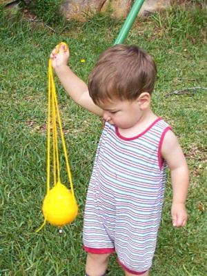

Have you a toddler aspiring to be an altar-server one day? Here's a very safe thurible that can be swung around without damaging furniture or setting things on fire.
Note: this pattern uses Australian/UK terminology. US crochet workers may like to substitute double crochet for what I call treble.
Yellow-Gold 8 ply (DK) knitting yarn. 4.0mm crochet hook. Stuffing.
Work 3 ch and join into a loop with a sl st. 3 ch, 15 tr into the loop. For this and all subsequent rounds close with a sl st.
3 ch then 2 tr into each tr.
3 ch then * 1 tr into next tr then 2 tr into next tr, repeat from * to end.
3 ch then 1 tr into each tr to end. Repeat last row twice.
1 dc into each tr to end. Repeat last row once.
3 ch, * 1 tr into each dc 3 times, miss next dc, repeat from * to end.
Note: missing stitches causes holes. To avoid this start making a treble but stop just before pulling the last loop through. Then make a double into the next stitch and pull the loop right through all the loops left on your hook.
1 dc into each tr. Repeat last two rows twice.
Stuff the ball now while there's still a gap.
1 tr into every second dc to end.
1 dc into every second tr to end.
This should leave only the smallest gap which can be closed with a sl st.
Make a long chain to the desired length, then the same length again and join to the ball at the two rows of dc. Work a line of sc around the ball to a point about a third of the way around, then start another long chain. At the top make a loop for a handle by joining to the first chain with a sl st. Keep chaining all the way back down to the ball and join the chain to the row of dc at a point making the chains equally spaced around the ball. You might finish with some decorative chain stitch around the ball to simulate the filigree work you see on some fancy thuribles.
A little bell might be sewn on the bottom to make it sound a bit more like a real thurible.